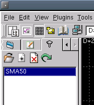

The backtest tab allows you to open, edit, delete, backtesting
rules. A backtesting rule is a collection of indicators and stops used
to perform trades based on real chart data. The results are then
recorded, listed and graphed for you. The purpose is to allow you to
test "what if" ideas without risking real money.

The context menu functions are as follows:
Permanently delete the backtest rule selected.